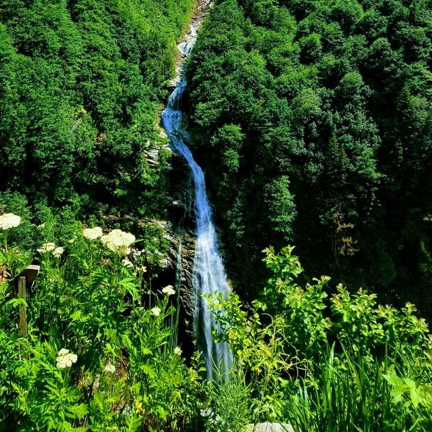

Doğanın Kalbinde Bir Yolculuk
Karadeniz’in yemyeşil doğası, sisli dağları ve kendine özgü yaylaları her gezginin mutlaka deneyimlemesi gereken bir rota sunuyor. Uzungöl’den başlayıp Ayder’e kadar uzanan bu yolculuk, hem ruhunu hem bedenini yenileyecek türden.

1. Durak: Uzungöl
Trabzon’un en çok ziyaret edilen noktalarından biri olan Uzungöl, göl manzaralı yürüyüş yolları ve yöresel lezzetleriyle ünlüdür. Sabah erken saatlerde göl çevresinde yürüyüş yapmak eşsiz bir deneyim sunar.
2. Durak: Haldizen Vadisi
Uzungöl’e çok yakın olan bu vadide doğayla baş başa kalabileceğin yürüyüş rotaları bulunur. Bol bol fotoğraf çekmeyi unutma!
3. Durak: Çamlıhemşin
Rize'nin huzur dolu ilçesi Çamlıhemşin, tarihi konakları, fırtına deresi ve zengin kültürüyle ünlüdür. Ahşap yayla evleri ve doğal güzellikler, bölgeyi özel kılar.
4. Durak: Ayder Yaylası
Yolculuğun final noktası olan Ayder; kaplıcaları, yayla şenlikleri, şelaleleri ve nefes kesici doğasıyla en sevilen duraklardan biridir.
Yanına Ne Almalısın?
- Yağmurluk (Karadeniz şakaya gelmez!)
- Su geçirmez yürüyüş ayakkabısı
- Yedek kıyafet
- Termos – sıcak çay keyfi için
Eğer doğayla iç içe, sakin ve huzur dolu bir rota arıyorsan, Karadeniz yaylaları tam sana göre. Rotiva ile keşfetmeye devam et!

Rotiva Ekibi
Türkiye’nin dört bir yanındaki en güzel rotaları senin için geziyor, notlar alıyor ve Rotiva blog’da paylaşıyoruz.
Yorum Yap